哈喽~
没戳，俺老孙回来了。
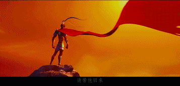
说长不长的暑假已过，
各位头马小伙伴们暑假玩的开森么？
没有小编的日子里你们想我么？
（原来你是这么厚颜无耻的小编）
首先向各位北航头马的小伙伴们说一声抱歉，
因为某些原因小编给自己放了一整个暑假。
也耽误了俱乐部正常的Minutes发布，那么今天起小编宣告回归，
撒花~~~
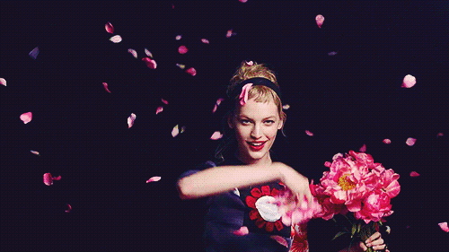
新学年，新气象。
首先我们对刚参加完秋季小区比赛的北航头马们表示热烈庆贺！！
在新主席书华带领下
头马选手取得了史无前例的巨大收获，具体见上篇Minutes
那么这周俱乐部的活动又发生了什么呢？

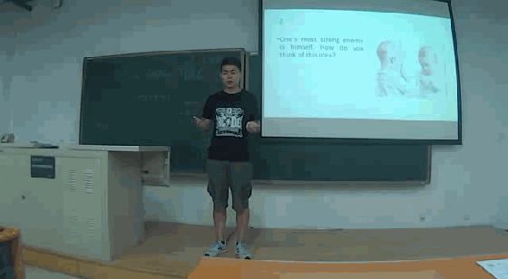
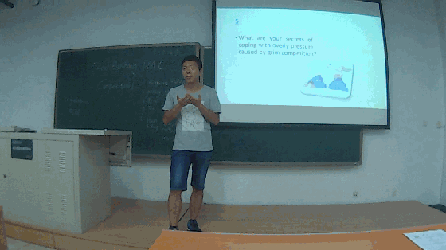
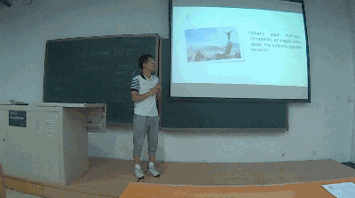
客人在北航头马的精彩发挥
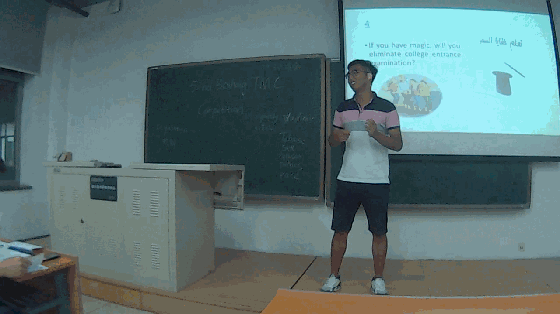
Eric台上没有好的想法后。。。
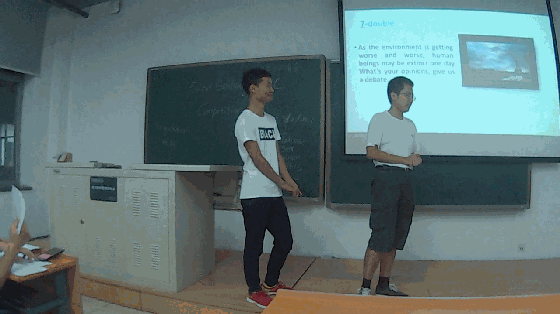
客人的强大的主场气势
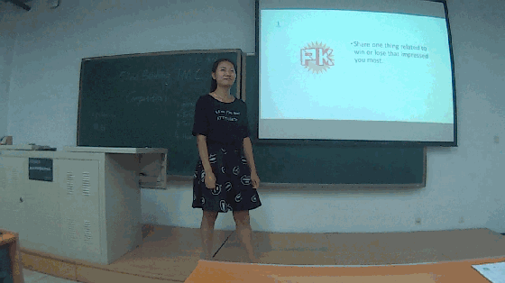
I didn't realize you are this type of HuanHuan...
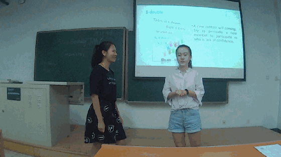
Huan和Amy这一组活灵活现的double，平常没少练习吧（Haha）

Best table topic speech-Eric（包大人你怎么来了！）
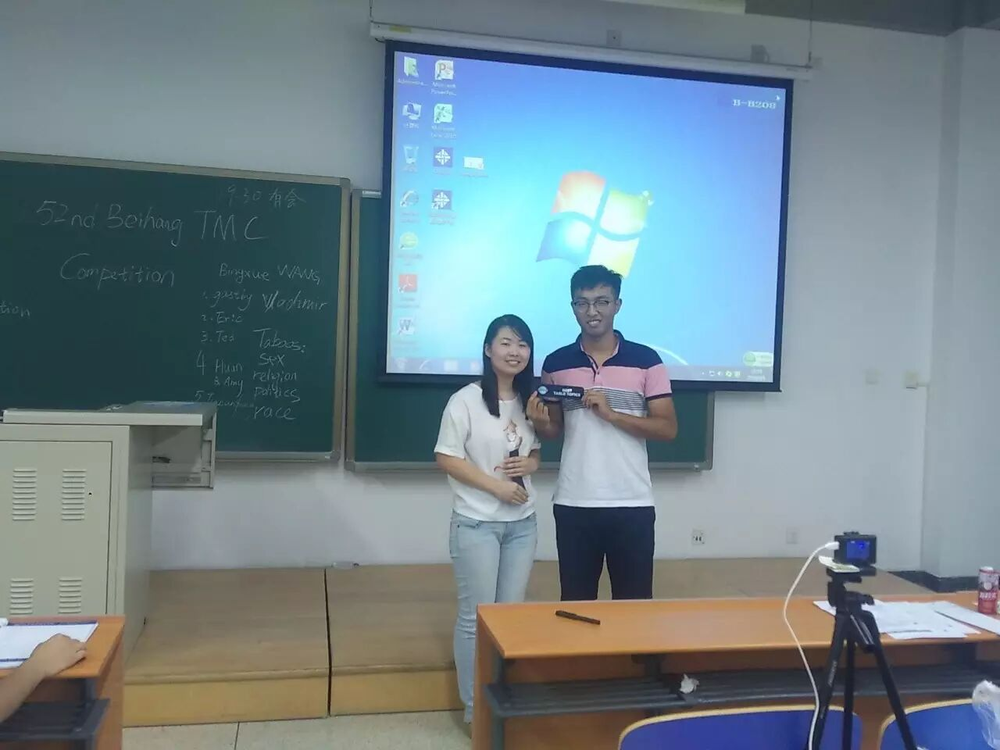
Best Prepared speech-Amy（二姐么么哒~~~）
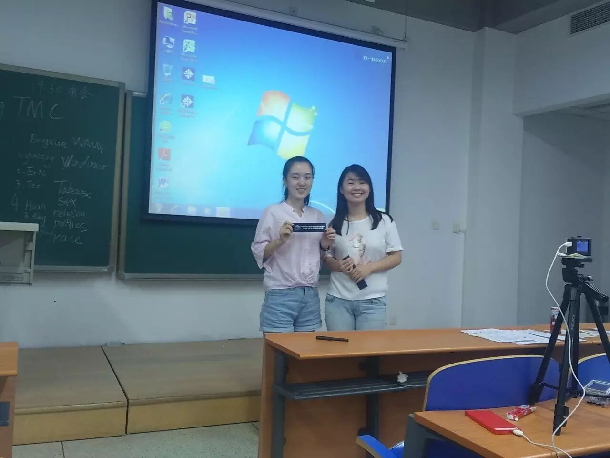
Best Evaluator-Keven（怎么又是大帝啊，哎。。。）
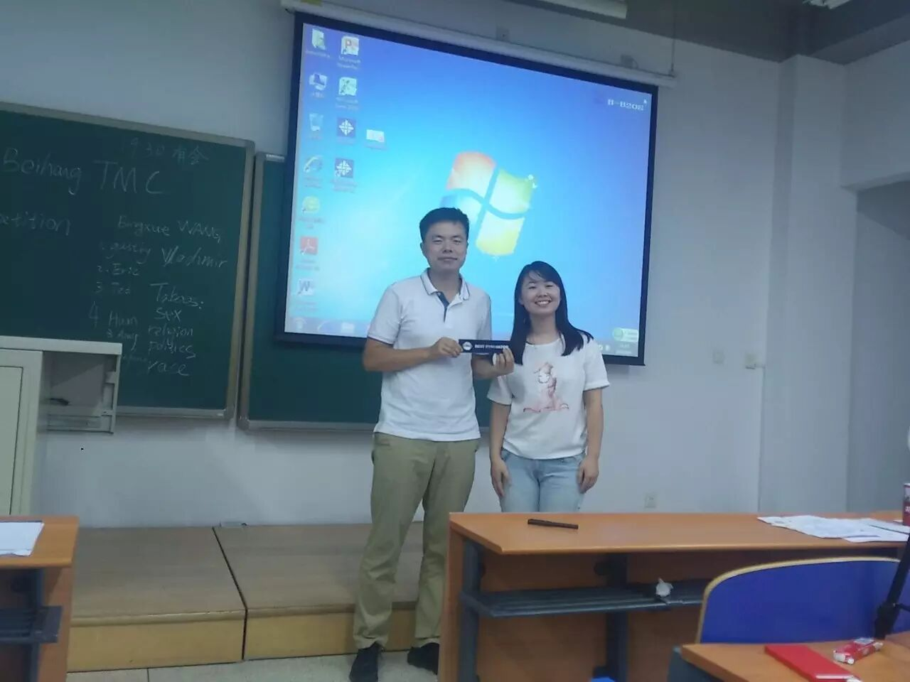
欢迎客人们哒拜访，
也希望越来越多对英语演讲感兴趣的你们
可以和我们一起分享头马舞台的美好时光。
然后感激参加（组织）会议的头马小伙伴们，
为我们带来了每一场周五的聚会~
最后，来张大合照吧~~ 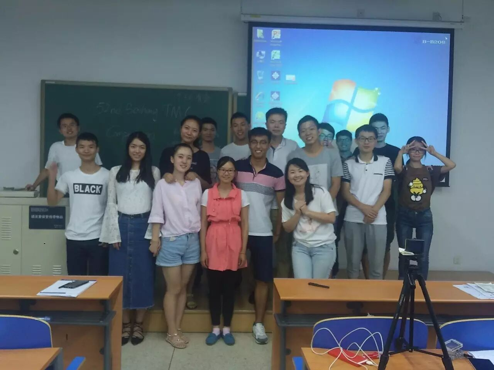
CU - next next Friday~~~~
下周是月半，小编在这里提前祝每位小伙伴中秋快乐~
原文链接（公众号关闭后可能失效）：
https://mp.weixin.qq.com/s/6WGLHh2cQSw-Iyw3EC1Ygw
https://mp.weixin.qq.com/s/6WGLHh2cQSw-Iyw3EC1Ygw
第 335/539 篇 · 北航Toastmasters英文演讲俱乐部公众号存档
本页为抢救式本地归档，图文已永久保存。
本页为抢救式本地归档，图文已永久保存。